Activity: Placing annotations
Overview
This activity covers the workflow of placing annotations on a drawing. An existing drawing file is used to annotate.
Objectives
In this activity you will place geometric tolerances and finish symbols.
-
Open annotation_fan.dft.
Place a datum frame on the right drawing view.
On the Home tab→Annotation group, choose Datum Frame .
On the command bar, cancel the selection of the Leader and Break Line options. Type A in the Text box and set the Dimension Style box to ISO.
Select the right vertical edge on the cross-section view and place the datum frame as shown. If you want the minus sign to display before and behind the letter A in the datum frame (-A-), on the View tab, choose Styles→Modify to invoke the Modify Dimension Style dialog box. Then click Annotation tab and select the Dashes on Datum Text check box.
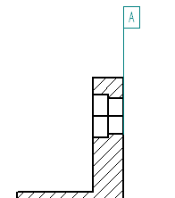
On the command bar in the Text box, change A to B and then click the diameter dimension on the cross section view and place the datum frame as illustrated.
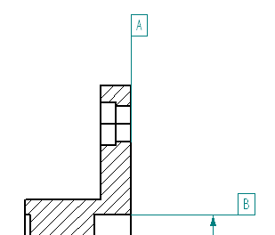
-
Click the Select tool, and reposition the dimension on the counterbored hole as shown below. Reposition the dimension horizontal.
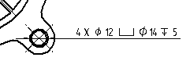
On the Home tab→Annotation group, choose Feature Control Frame .
Click the Position symbol, and then click the Divider symbol.
Click the Diameter symbol, press the space bar, type in 0.05, and then press space bar again.
Click the Material conditions: S and click the Divider Symbol. Press spacebar and then type B in the content field. The dialog box should match the following illustration.
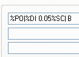
In the Save settings: field, type Position B 0.05.
Click Save to save these settings as Position B 0.05. If prompted, click yes to overwrite the file that already exists.
Click OK.
On command bar, clear the selection of the Leader and Break Line options.
Select the diameter dimension on the lower right counterbore, and place the geometric tolerance as shown.
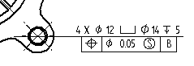
Click the Feature Control Frame Properties .
Click the Parallelism symbol and create a callout of 0.10 mm to datum A. Be sure to add the dividers as shown.
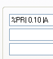
Click OK and set the Leader and Break Line options. Place the feature control frame on the left side of the cross section view as shown.
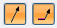
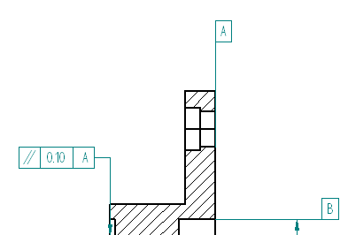
Save the file.
On the Home tab→Annotation group, choose Surface Texture Symbol .
Select Symbol type: for a machined finish on the Surface Texture Symbol Properties dialog box.
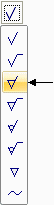
Type 1.6 in the value field shown and click OK.
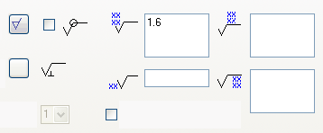
On the command bar, clear the selection of the Leader.
Place the surface finish symbol on the left vertical object line of the cross sectioned part. Click the edge (A).
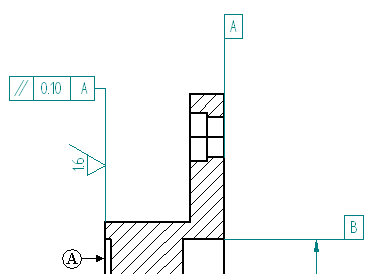
The section cut produced extra edges in the section view. Hide those edges.
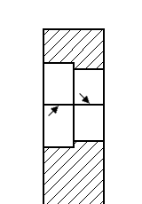
On the Home tab→Edges group, choose Hide Edges.
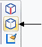
Click the two edges shown.
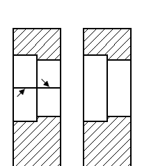
On the Home tab→Annotation group, choose Center Line .
On the command bar, make sure the Dimension Style is set to ISO and the Placement options field is set to By 2 Points.
On the command bar, click Center Line Properties .
On the Center Line & Mark Properties dialog box, click the Line Type shown and click OK.
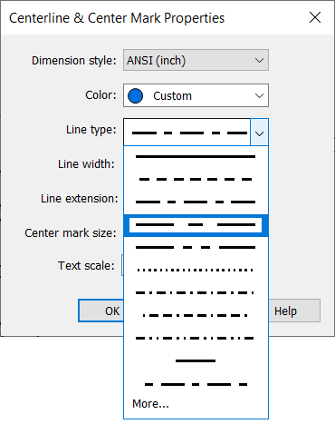
Place the center line through the center of the counter bored hole by selecting a keypoint on each end of the hole. Use IntelliSketch to locate the keypoint of the vertical line.
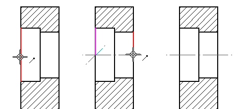
Choose the Edge Condition command .
In the Edge Conditions Properties dialog box, type 12 in the Upper tolerance field and 6 in the Lower tolerance field. Click OK.
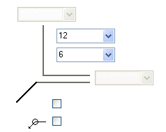
Select the lower horizontal edge on the cross section view edge and place the symbol as shown below. You may have to select the edge condition after placement and select the handles to reposition the text as shown.
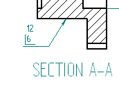
Fit the drawing sheet.
Save the file.
You can add notes to a drawing sheet by typing them in text boxes.
For more complex instructions, you can use a word processor to create the notes, and then copy and paste the notes directly into Solid Edge.
Choose the Text command .
Click and drag to place a text box above the title block as shown.
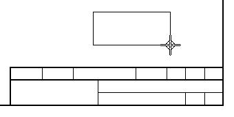
The text cursor is located in the top-left corner of the text box, ready for you to begin typing.
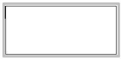
Type the text shown in the illustration below, pressing Enter to start each new line.
Select all of the text except the word NOTE, so that the text is yellow-highlighted.
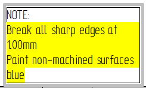
On the Text command bar, click Bullets and Numbering
, and then select 1,2,3 from the Numbering list. This converts the selected text to
a numbered list, using the number format associated with the current text style.
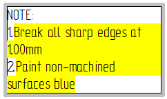
Change the format of the numbers in the numbered list. With the cursor still in the
text box, click the Properties button  on the command bar. In the Text Box Properties dialog box, click the Bullets and Numbering tab, and then use the Format list to set the format to (1).
on the command bar. In the Text Box Properties dialog box, click the Bullets and Numbering tab, and then use the Format list to set the format to (1).
Display a border around the text box. On the command bar, click the Border button .
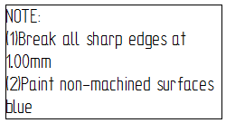
You can use the Text command bar to apply a border to the text box, and to adjust the spacing of the text so that it is offset from the border. You can set the size of the text box so that it automatically expands or shrinks to fit the contents.
Adjust the width of the text box so that the lines of text do not wrap.
-
Select the edge of the text box so that the text box edit handles are displayed.
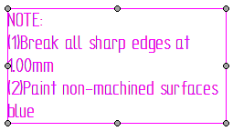
-
On the command bar, click Text Control , and then choose Fit to Content. This sizes the text box so that each line of text fits on its own line.
Apply formatting to the text in the text box.
-
Change the font of all of the text in the text box.
-
Click the border of the text box. Notice that no edit handles appear this time. This is because the text box sizing is now set to automatically fit the contents.
-
On the command bar, use the Font list to select a sans serif font such as Arial.
-
-
Select the word NOTE, so that it is yellow-highlighted, and then click the Bold button on the command bar.
You can increase the border line width to improve visibility, and adjust the spacing of the text inside the text box so that it is not crowded against the border. To do this, click the border, and then click the Properties button again. On the Border and Fill tab, set the border Width to 1 mm, and set the text Offset to 5.
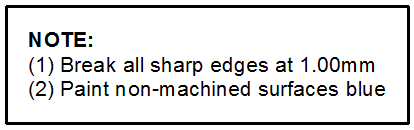
Save and close the file. This completes the activity.
In the activity you learned how to place geometric tolerances and assign surface texture symbols to the drawing. You also learned how to hide unwanted edges in section views, and how to create and edit drawing notes.
-
Click the Close button in the upper-right corner of the activity window.